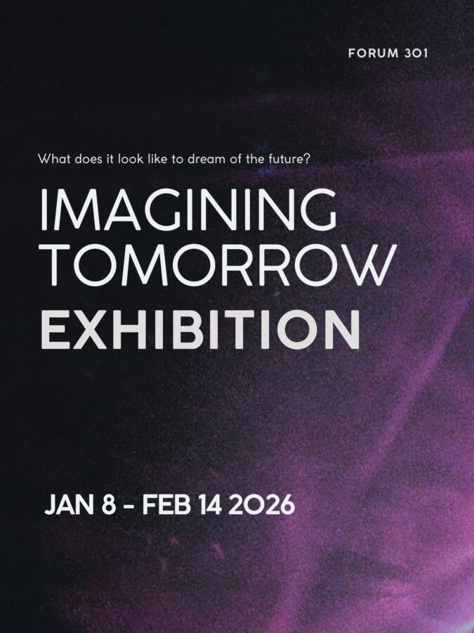

Imagining Tomorrow
This exhibit will showcase the work of local Chicago artist. These artist have used everyday objects to recreate wheat they see art as.
Exhibition: January 8th, 2026 – February 14th, 2026
Forum 301, located at 301 W. Ohio, invites artists from the Chicagoland area to submit work for our upcoming exhibition, “Imagining Tomorrow.” The show asks: How do we envision the future of art, culture, and community? What does it look like to dream beyond the present moment — socially, politically, environmentally, or spiritually?